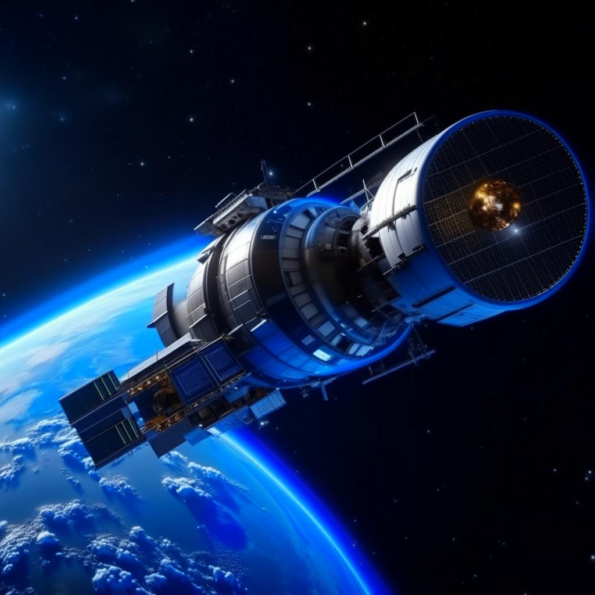

Новый рывок в покорении космоса: обещания и вызовы
Космическая индустрия
Перед современным человечеством открываются новые перспективы в покорении космических просторов. Быстрое развитие технологий и научных открытий вносит революционные изменения в направления исследования и освоения космоса.
{kind=link}
Одним из самых важных достижений последних лет стало развитие частных компаний в космической индустрии. Компании, такие как SpaceX, Blue Origin и Virgin Galactic, предлагают инновационные решения и подходы к покорению космоса. Они создают собственные ракетные двигатели, разрабатывают современные космические корабли и спутники, и вносят революционные изменения в способы доставки грузов и людей в космос. Один из самых ярких примеров – успешные посадки и повторные использования ракет, что сокращает стоимость полетов и делает их доступными для более широкой аудитории.
Иследование космоса
 Еще одним интересным направлением развития является исследование других планет и спутников Солнечной системы. Коллективное усилие NASA и международных партнеров привело к отправке миссий на Марс, Юпитерову луну Европу, а также исследованию астероидов и космического мусора. Эти миссии позволяют получать ценную информацию о структуре и составе других планет, а также открывают потенциал для будущего освоения и колонизации космоса.
Еще одним интересным направлением развития является исследование других планет и спутников Солнечной системы. Коллективное усилие NASA и международных партнеров привело к отправке миссий на Марс, Юпитерову луну Европу, а также исследованию астероидов и космического мусора. Эти миссии позволяют получать ценную информацию о структуре и составе других планет, а также открывают потенциал для будущего освоения и колонизации космоса.
Однако покорение космоса представляет немалые вызовы и препятствия. Один из них – защита астронавтов от вредного воздействия космического излучения. Увеличение времени пребывания человека в космосе, особенно в межпланетных полетах, требует разработки новых методов исключения негативных последствий излучения. Кроме того, необходимо решить проблему стабильного и экономически эффективного способа длительного содержания людей на космических станциях и в будущих космических базах.
Заключение
Однако несмотря на вызовы, покорение космоса продолжает привлекать и вдохновлять нас. Новые технологии, сотрудничество между странами и прогресс в научных исследованиях пытаются преодолеть эти сложности и открыть новые горизонты для человечества.
В заключение, новый этап в покорении космоса предлагает нам возможность сделать революционные открытия, расширить познания о Вселенной и возможно, даже обнаружить жизнь в других уголках космоса. Однако, чтобы этому сбыться, мы должны оставаться настойчивыми, инновационными и готовыми преодолеть все вызовы, которые могут встретиться на нашем пути в покорении бескрайних просторов космоса.
Статья была выпущена